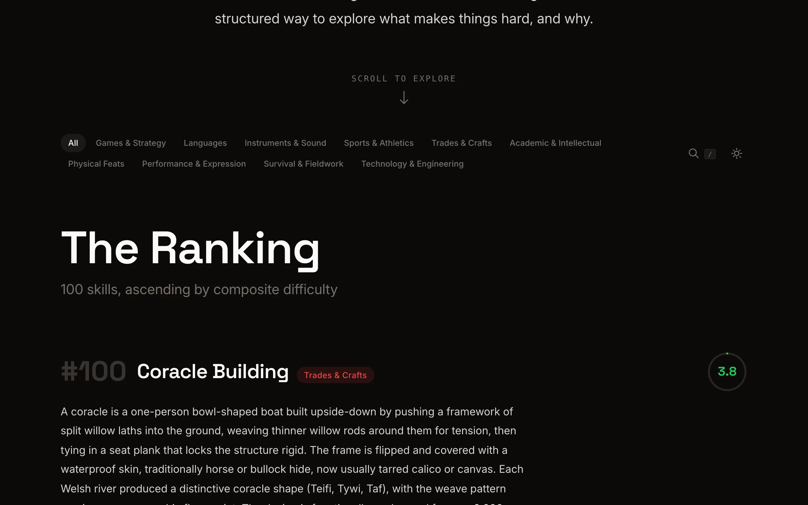
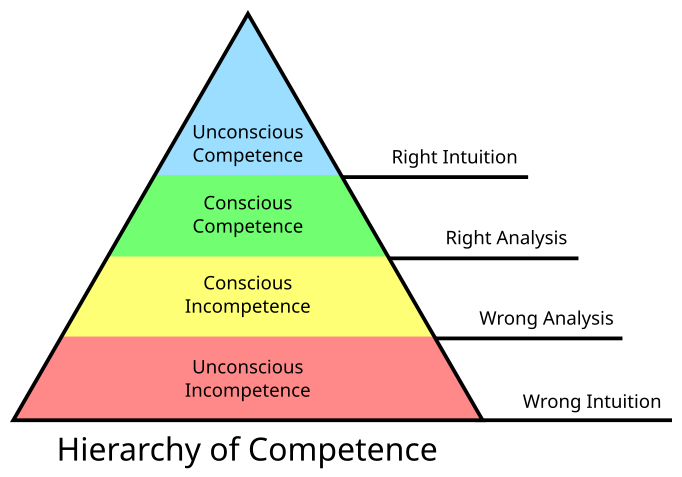
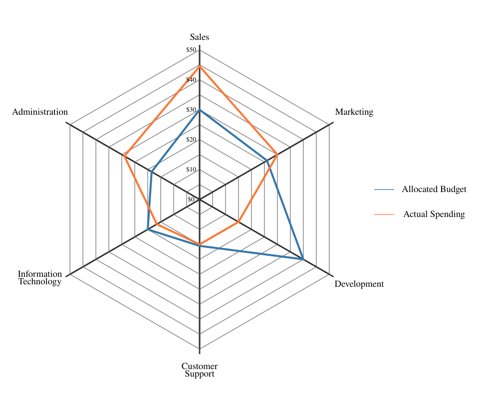

The "10,000 hours" framing treats all skills as equally shaped. They're not. Chess and cardiac surgery might both take a decade to master, but they score very differently on failure cost, physical demand, and how fast the field changes under your feet. Mastery ranks 100 skills across 19 difficulty dimensions, each scored 0-10 with cited sources. The result is a ranked list from easiest to hardest, but the interesting part is the shape of each skill's difficulty profile, not just the number.

{kind=link}
The 19 dimensions
Each skill is scored on: time to basic competence, time to expert performance, feedback delay, failure cost, cognitive demand, physical demand, prerequisite knowledge, measurability, perishability, precision required, ambiguity, instruction dependency, environmental variability, concurrent sub-skill load, plateau density, domain evolution rate, observability of expertise, luck/variance ratio, and social coordination load. The composite score is a weighted average. Time to expert and cognitive demand carry the highest weights (0.08 and 0.07). Luck/variance and domain evolution carry the lowest (0.04 and 0.03).
Every score has a confidence interval between 0 and 1. Chess time-to-expert gets 0.9 confidence because Elo ratings and training studies provide hard data. Stand-up comedy ambiguity gets lower confidence because "good" is subjective and the data is thin. The confidence values are visible in each skill's methodology panel alongside the source citations.
The skills
100 skills across 10 categories: games and strategy, languages, instruments and sound, sports and athletics, trades and crafts, academic and intellectual, physical feats, performance and expression, survival and fieldwork, and technology and engineering. The collection includes expected anchors like chess, piano, and gymnastics alongside things like Carolinian wayfinding (Polynesian star navigation), mokume-gane (Japanese metal layering), vinkensport (Belgian competitive bird singing), and ferrofluid sculpting. The mix is deliberate. Familiar skills give you calibration points. Unfamiliar ones are where the scoring model gets tested.

{kind=link}
Interactive challenges
Twelve of the skills have playable challenges that test a fragment of the actual skill. Pitch Matcher has you match a reference tone using a slider, measuring accuracy in cents. Pattern Memory recreates de Groot's 1946 chess experiment: you see a board position for five seconds, then pick which of four options matches. Polyrhythm Tapper asks you to maintain independent rhythms (2:3, 3:4, 4:5) with the keyboard. Beat Detector tests whether you can eliminate the interference pattern between two detuned frequencies. Star Navigation simulates Polynesian wayfinding with star path selection.
The challenges map back to the scoring dimensions. Pitch Matcher tests precision and feedback delay. Pattern Memory tests cognitive demand. Polyrhythm Tapper tests concurrent sub-skill load. They're not full skill assessments, just enough to give you a feel for why a particular dimension scored high.
Implementation
The site is built with Astro, server-rendered to static HTML. Each skill is a JSON file validated against a Zod schema at build time, covering all 19 axis scores, sources, metadata, and optional challenge references. GSAP handles scroll-triggered card animations. Lenis provides momentum scrolling. Fuse.js powers the command palette (Cmd+K) for fuzzy search across all 100 skills. Interactive challenges use the Web Audio API for pitch and rhythm detection, and Canvas for timers and waveform visualization. The whole thing deploys to GitHub Pages.